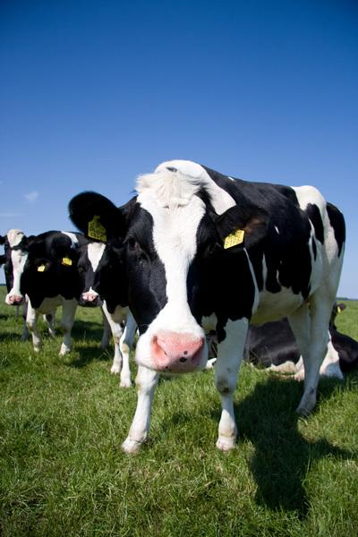
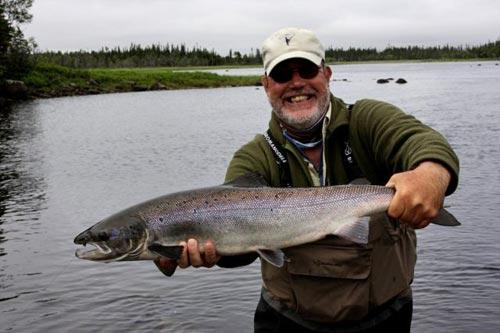
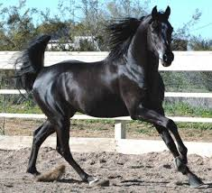
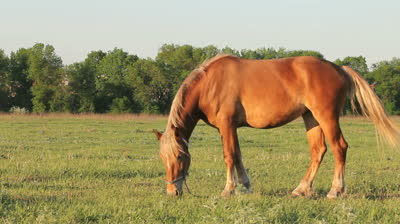
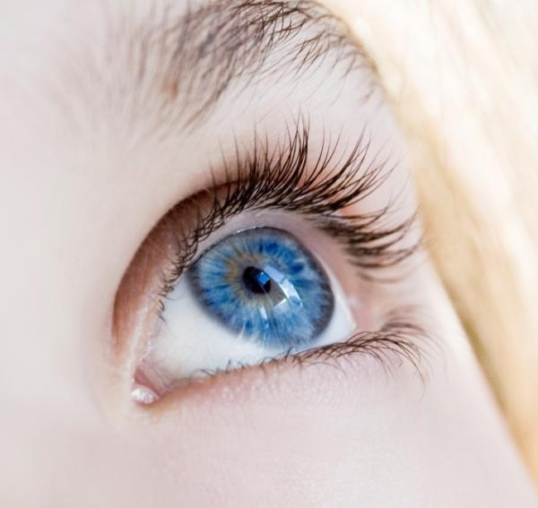
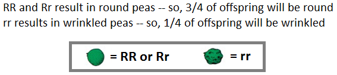
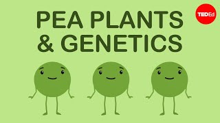
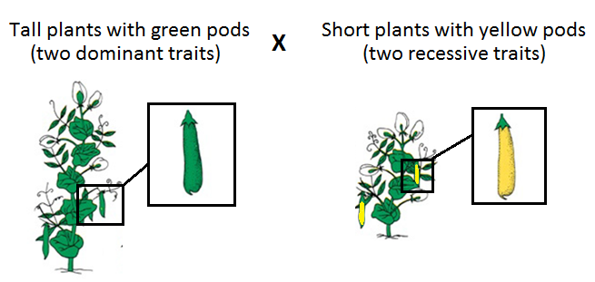
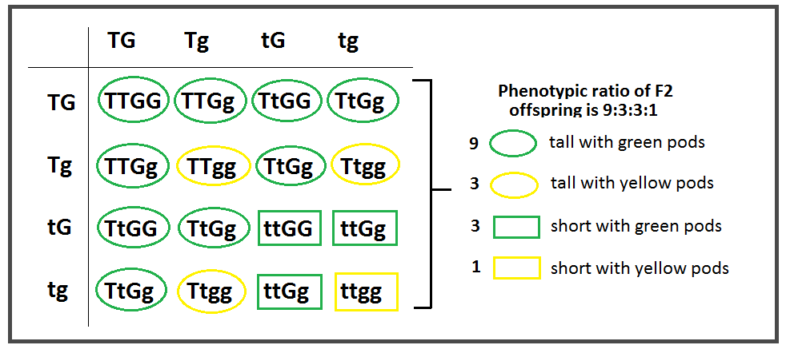
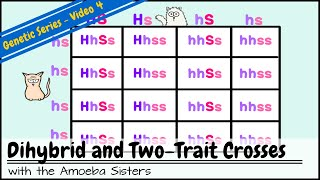

Other species that are the product of selective breeding:




But how does it work???
?
?




Traits are determined by specific genes, or segments of DNA. Different variations of genes are known as alleles. In most cases, one allele is dominant over the other, influencing the way such genes are expressed…
➢The dominant allele (represented by capital letter) is always expressed when present
➢A recessive allele (represented by lowercase letter) is only expressed in the absence of the dominant allele.
The allele that encodes brown eyes (B), for example, is dominant over the recessive allele that encodes blue eyes (b).
GENES, ALLELES AND TRAITS


BB (homozygous dominant)
oBoth parents gave a dominant allele
oResults in dominant phenotype
Bb (heterozygous)
oOne parent gives a dominant allele, the other parent gives a recessive allele
oResults in dominant phenotype
bb (homozygous recessive)
oBoth parents give a recessive allele
oResults in recessive phenotype
Zygosity:
Homozygous means having two of the same alleles
Heterozygous means having two different alleles
For simple dominant-recessive traits there are three possible allele combinations:
The idea of dominant and recessive alleles was first described by Gregor Mendel…
oHe conducted test crosses with peas of different phenotypes and realized that for each trait, offspring displayed either the maternal or paternal phenotype rather than a blending of the two.
oE.g. a true-breeding (i.e. homozygous) plant with purple flowers crossed with a true-breeding (i.e. homozygous) plant with white flowers always produced offspring with purple flowers, not light purple as previously suggested by the blending theory of inheritance
oThus, he concluded that purple flowers were dominant to white
Mendelian Genetics

Some traits studied by Mendel:
Each trait is controlled by a single gene or set of alleles that, fortunately for Mendel, had a simple dominant-recessive relationship
(as we will see later, this is not always the case which would have really messed things up for him)

Recall that the F2 generation are the offspring of a cross between individuals of the F1 generation:
MENDEL’S TEST CROSSES CONT’D

Cross: Rr x Rr
MENDEL’S TEST CROSSES CONT’D


So, as long as we know the genotype of individuals being crossed, we can determine the ratio and potential genotypes of their offspring.
This is done through the use of a
Punnett Square:

Because of the particular way in which chromosomes align during metaphase I of meiosis, each of the four allele combinations is as likely as the other.
Altogether, Mendel’s experiments on pea plants allowed him to develop the following three laws. We have addresses the first two so far. The Law of Independent Assortment will be looked at in the next topic.

a)Is it possible for a homozygous black mouse and a heterozygous black mouse to have ‘children’ that are brown? How about “grandchildren” that are brown?
BB x Bb
B B
B BB BB
b Bb Bb
No children will be brown, because each possible combination has at least one dominant black allele.
If two of the heterozygous children from the F1 generation reproduce, they will have a ¼ chance of having brown offspring. So yes!
Bb x Bb
B b
B BB Bb
b Bb bb

a)Is it possible for a homozygous black mouse and a heterozygous black mouse to have ‘children’ that are brown? How about “grandchildren” that are brown?
If two of the heterozygous children from the F1 generation reproduce, they will have a ¼ chance of having brown offspring. So yes!
Bb x Bb
B b
B BB Bb
b Bb bb
We just observed how recessive phenotypes can ‘skip’ generations. This is because they are being masked by the dominant allele, but they are still present and will show up if paired with another recessive allele.
Test Crosses
An individual with the dominant phenotype could be either homozygous (BB) or heterozygous (Bb). By performing a test cross, we can determine the true genotype of such individuals.
Cross the unknown individual (B?) with an individual who displays the recessive phenotype (bb) (because their genotype is known):
If the unknown was homozygous, all offspring will show dominant phenotype
If heterozygous, some (typically half) offspring will show recessive phenotype
There are two possible outcomes:

Test Crosses
If the unknown was homozygous, all offspring will show dominant phenotype
If heterozygous, some (typically half) offspring will show recessive phenotype
There are two possible outcomes:
Note: This will typically require sufficient number of offspring so we can feel confident about which outcome we are observing. If the recessive phenotype is present, this is sufficient to conclude that the unknown must have been heterozygous. But we need a good number of offspring showing only the dominant phenotype to feel confident declaring the unknown homozygous, to rule out it occurring due to random chance.

Inheritance and Punnett Squares Recap


Dihybrid Crosses
Mendel also conducted experiments to determine whether the pattern of segregation of alleles for one gene had any influence on that of another gene…
E.g. Plant size and pod colour:
Are plants with the “tall” allele just as likely to have the allele that encodes green pods as the allele that encodes yellow pods?

Two true-breeding plants for two different traits are crossed…
ttgg


F2 Generation:


Law of Independent Assortment
The two alleles for one gene segregate independently of alleles for other genes during gamete formation.
Recall these diagrams from your notes on meiosis II where we discussed how chromosomes line up independently of one another during metaphase I. Take a moment to reflect on how this connects to the Law of Independent Assortment.


Now we have addressed all three laws of Mendel:
TWO TRAIT CROSSES
Example 1:
In tomatoes, red fruit is dominant to yellow fruit, and tall plants are dominant to short plants. A plant that is heterozygous for both traits is crossed with a plant that is heterozygous for the gene encoding height, and homozygous recessive for the gene encoding fruit colour.
Step 3 Use the gametes to set up and fill out a Punnett Square
Tip: use lots of space for your Punnett square so you can color code or fill out phenotypes directly in the boxes.
| rT | rt |
RT | RrTT Red and tall | RrTt Red and tall |
Rt | RrTt Red and tall | Rrtt Red and short |
rT | rrTT Yellow and tall | rrTt Yellow and tall |
rt | rrTt Yellow and tall | rrtt Yellow and short |
Step 4 Use information to answer question.
b. What proportion of offspring will be…
○tall with red fruit? 3/8
○tall with yellow fruit? 3/8
○short with red fruit? 1/8
○short with yellow fruit? 1/8

Two Trait Crosses Recap
➢This was a short lesson, but ensure that you do all of the assigned practice before moving on, as more complexity is coming. You want to feel comfortable working with one trait and two trait crosses for these ‘simple’ dominant/recessive allele relationships
Note: You don’t actually need to do a 4x4 punnett square for the example in the second video. If you notice, each column will look the same!


Other Modes of Inheritance
INCOMPLETE DOMINANCE
oOccurs when neither allele on a particular gene can mask the presence of the other (i.e. there is no true “dominant” allele)
oTwo alleles of the same variety are required to fully express their phenotype; heterozygotes thus display partial expression of each → we see an intermediate phenotype
oUpper and lowercase letters not used when representing incomplete dominance, rather two capitals letters.

The ‘roan’ coloring in cattle is an example of codominance. The white allele and red allele both get expressed when present.

Before we move on to the next example problem, let’s review some math around probability…
To calculate the probability of two independent events, we must multiply the probability of each event happening individually.
Example 1: The probability of toss a coin getting two heads in a row is:
Tossing a head
Tossing a head
Tossing two heads in a row
Example 2: The probability of tossing a head and rolling a 3.
Tossing a head
Rolling a 3
Tossing a head and rolling a three


EXAMPLE 2:
A woman with blood type B has a child with a man with blood type AB. The woman’s father had blood type O. What is the probability that their child is a son and has the blood type B?
Since the woman’s blood type is B, her genotype can be either IBIB or IBi. However, since we are told that her father has blood type O, his genotype must be ii and therefore must have passed on a i allele to his daughter. So the woman’s genotype must be IBi.
Therefore our cross is:
IBi x IAIB
IA IB
IB IAIB IBIB
i IAi IBi
Now we must remember that blood type and sex are independent events since they are not on the same chromosome. So we must multiply the individual probabilities:
Being a boy
Having blood type B
Being a boy and having blood type B
Simplified probability